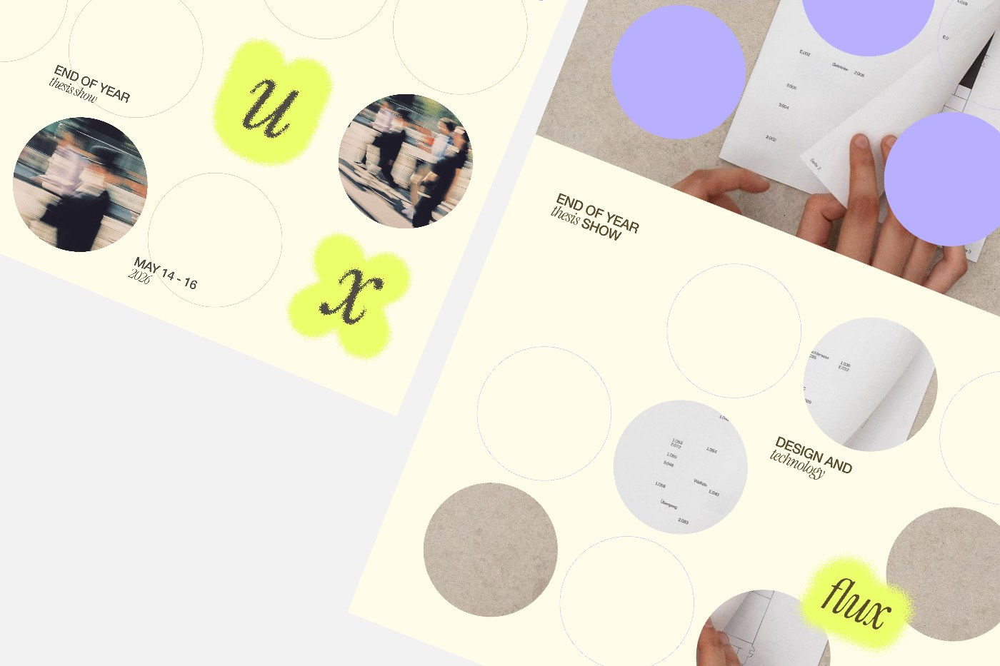
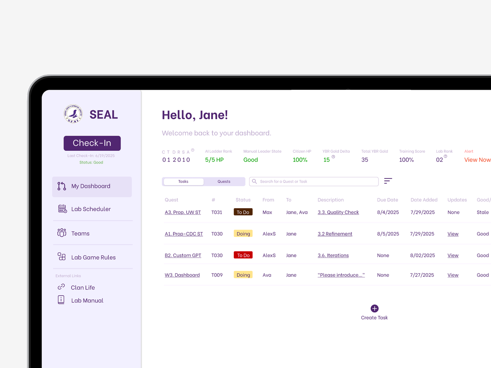
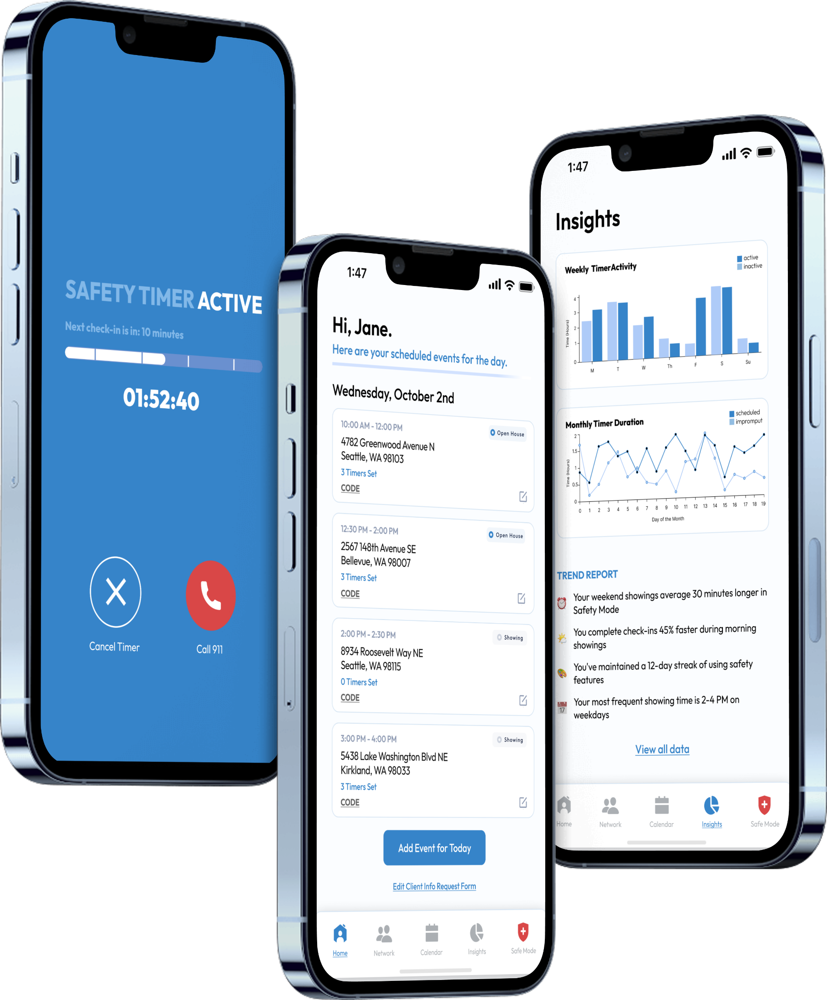
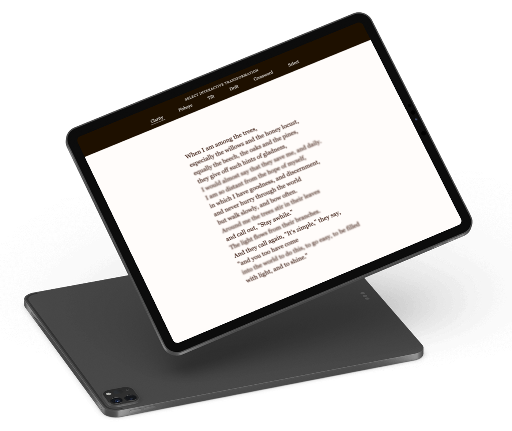
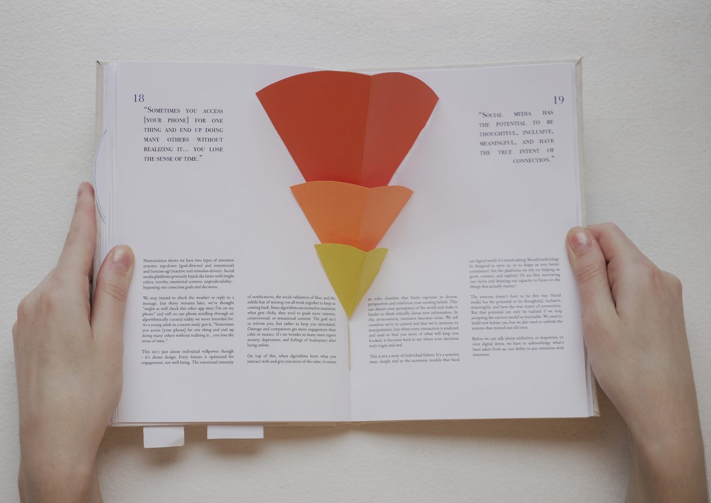

Flux
Web0→1Cross-Collaboration
Public thesis website for the Parsons School of Design's Design and Technology program.
Launched for a 200+ attendee showcase, scaled across 170+ pages.

SEAL
InternshipUX/UIUsability
Internal dashboard for 300+ engineers.
Unified a multi-spreadsheet workflow into one dashboard for 300+ engineers.
ContextPath
Product DesignAI IntegrationFigma MCP
AI visitor companion app for the MET's collaboration with Anthropic.
Designed a working prototype in a single one-day Anthropic × Met hackathon.
Through AI's Eyes
InteractionUsabilityExhibit
Teaching AI object recognition principles through an interactive installation in the Museum of Science.
26.7% of tested visitors learned something new about AI.
Watch Out
AIRapid PrototypingAward-Winning
Award-winning AI-generated video for wildlife preservation and fire prevention.
Won the Human + AI Co-Creation Award, made in a one-hour sprint.

Arc Security
InternshipUX/UICross-Collaboration
Reimagining safety for real estate agents.
Led a team in a hi-fi prototype addressing a fear 33% of real estate agents report.

Among The Trees
AIInteractionLive Website
Investigating the interplay between text and form with AI, using Mary Oliver's When I Am Among The Trees as a canvas for typographic experimentation.
Shipped as a live, interactive typographic experiment.

For Stillness
ProductVisual Design
Analog interaction design in a digital world.
A solo, hand-bound pop-up book from concept to final print.

Atlas
UX/UIStartupAI Integration
Founding designer at a pre-seed EdTech startup for a campus navigation app connecting users to resources across their community.